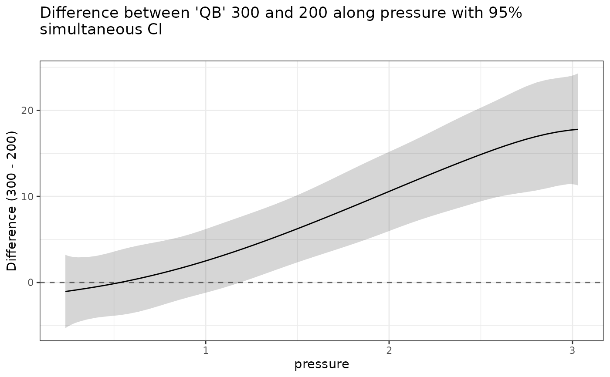
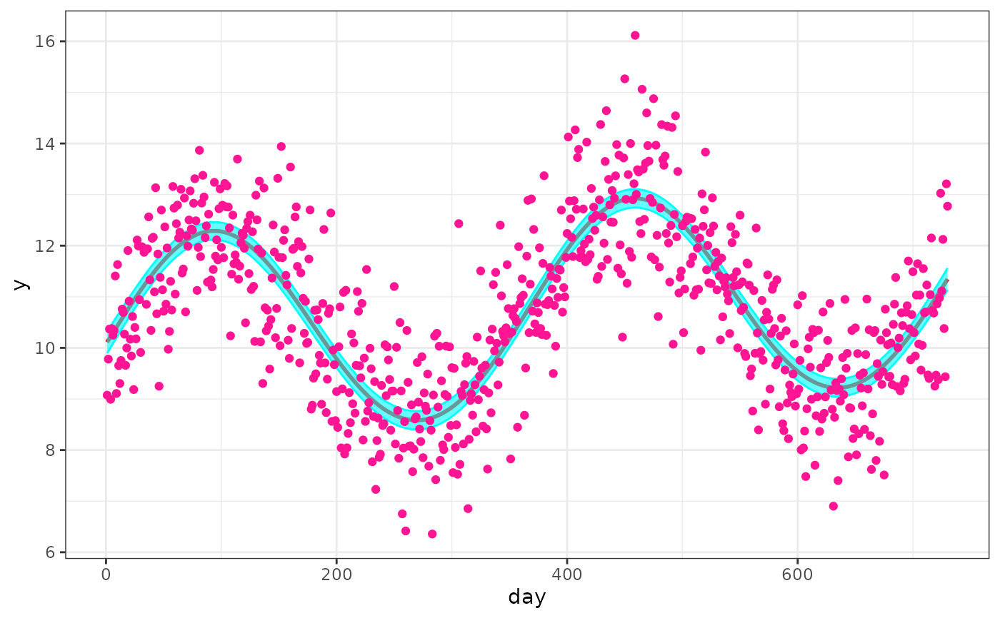
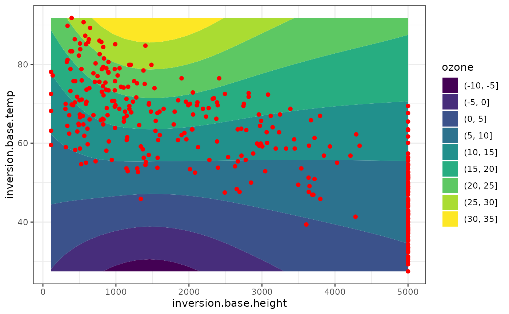
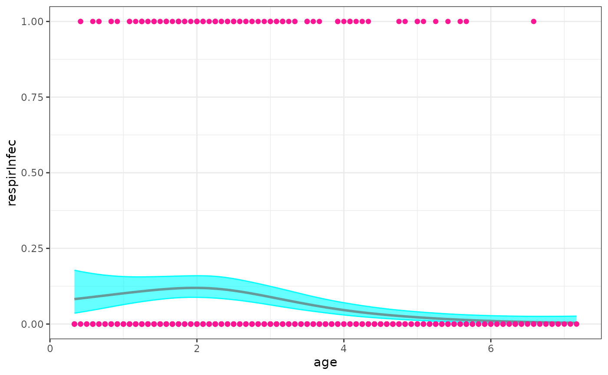

Fit a semi parametric model based on lme4 ecosystem including lmer, glmer and glmer.nb.
Usage
semireg(formula, data, family = NULL, ngbinomial=FALSE, REML = TRUE,
smoothZ = list(), ncenter=TRUE, nscale=FALSE, resp_scale=FALSE,
control = lmerControl(optimizer="nloptwrap"), start = NULL,
verbose = FALSE, drop.unused.levels=TRUE, subset, weights,
offset, contrasts = NULL, prt=TRUE, predict_info=TRUE, ...)Arguments
- formula
A two-sided linear formula object describing both the fixed-effects and random-effects part of the model, with the response on the left of a ~ operator and the terms, separated by + operators, on the right. Random-effects terms are distinguished by vertical bars ("|") separating expressions for design matrices from grouping factors.
- data
A data frame or list containing the model response variable and covariates required by the formula. By default the variables are taken from environment(formula and smoothZ), typically the environment from which semireg is called.
- family
A GLM family, see glm and family.
- ngbinomial
Logical scalar - Should a negative binomial GLMMs be used? .
- REML
Logical scalar - Should the estimates be chosen to optimize the REML criterion (as opposed to the log-likelihood)?
- smoothZ
Superseded since 2.0 (kept so that 1.x code runs; no new features): write the smooths in the formula instead (see ‘Smooth terms in the formula’). The older form of the smooths: a list includes a set of smooth Z matrixs (called 'smooth term') used in the mixed effects model, the name of 'smooth term' should be different any variables in the model, each 'smooth term' is the result of function
smZ. e.g. smoothZ=list(sm1=smZ(x1), sm2=smZ(x2, by=f1), sm3=smZ(x3, by=f2, group=TRUE), ...) where 'sm1' to 'sm3' should be new variable names in thedata, and x1 to x3 are covariates, and f1, f2 are factors.- ncenter
Logical scalar - Should the numeric predictors to be centered or not?
- nscale
Logical scalar - Should the numeric predictors to be scaled or not?
- resp_scale
Logical scalar - Should the response be involved in the scaling action or not?
- control
A list (of correct class, resulting from lmerControl() or glmerControl() respectively) containing control parameters, including the nonlinear optimizer to be used and parameters to be passed through to the nonlinear optimizer, see the *lmerControl documentation for details. The default is
lmerControl(optimizer = "nloptwrap")("bobyqa"in 1.x), also used for generalized fits.- start
Starting value list as used by lmer or glmer.
- verbose
Passed on to fitting lme4 fitting routines.
- drop.unused.levels
By default unused levels are dropped from factors before fitting. For some smooths involving factor variables you might want to turn this off. Only do so if you know what you are doing.
- subset
An optional expression indicating the subset of the rows of data that should be used in the fit. This can be a logical vector, or a numeric vector indicating which observation numbers are to be included, or a character vector of the row names to be included. All observations are included by default.
- weights
An optional vector of <e2><80><98>prior weights<e2><80><99> to be used in the fitting process. Should be NULL or a numeric vector.
- offset
This can be used to specify an a priori known component to be included in the linear predictor during fitting. This should be NULL or a numeric vector of length equal to the number of cases. One or more offset terms can be included in the formula instead or as well, and if more than one is specified their sum is used. See model.offset.
- contrasts
An optional list. See the contrasts.arg of model.matrix.default.
- prt
Logical scalar - Should the info to be print on screen in the middle of the process or not?
- predict_info
Logical scalar - Should provide the info for function semipred or not?
- ...
Further arguments for passing on to model setup routines.
Value
- semer
A mer model used in the fitting.
- data
A data.frame with generated variables in the fitting.
- fomul_vars
Name of variables in the formula of semireg model.
- sm_vars
Name of variables in the smoothZ list.
- smoothZ_call
A call used to produce smooth terms in the fitting.
- knots_lst
Knots used in each smooth term in the fitting.
- range_lst
Range of covariate used in each smooth term in the fitting.
- cov_lst
Covariance matrix list for each smooth term.
- u_lst
Random effects list for each smooth term.
- type_lst
Smooth type list of smooth terms.
- CovMat
Covariance matrix for all smooth terms.
- Cov_ind
Covariance matrix index for each smooth term.
- Cov_indN
Covariance matrix index for each smooth term when
group=TRUEinsmoothZargument.- df
Degree of freedom of all random terms.
- lmerc
Call used in the mer model in the fitting.
- smooths
For smooths written in the formula: the mgcv smooth objects and the maps that give the random-effect design of each block for new data (used by
semipred()andpredictmeans()).
Details
A semi parametric model can be parameterized as a linear (or generalized linear) mixed model in which its random effects are smooth functions of some covariates (named <e2><80><98>smooth term<e2><80><99>). semireg follows the approach suggested by Wand and Ormerod (2008) and represents the 'smooth term' using O'Sullivan-type of Z.
Smooth terms in the formula
Smooths can be written in the model formula, as for mgcv::gam, next to fixed and lme4 random terms:
y ~ A + s(x, by = A) + (1 | Block). Each smooth is set up by mgcv (bases, knots, identifiability
constraints) and split, as in gamm4, into an unpenalised part, which is added to the fixed effects as
ordinary terms, and penalised parts, each a block of random effects with one variance. The fixed terms are
added automatically (terms already written are not doubled), so a smooth by a factor cannot lose its group
slopes:
| Written | Meaning | Fixed terms added |
s(x), s(x, bs = "cr", k = 12) | one curve | x |
s(x, by = f) | a curve per level of f, a variance each (id = 1: one shared) | f + f:x |
s(x, by = z), z numeric | varying coefficient \(f(x) z\) | z + z:x |
s(x, f, bs = "fs") | random curves per level, one variance | none |
(s(x, k = 10) | g) | random curve per level of g: (x | g) (correlated intercepts and slopes) plus a spline deviation per level, one variance | none |
s(x1, x2) | isotropic surface (thin plate) | x1 + x2 |
s(x, bs = "os", k = 10) | O'Sullivan spline with k interior knots, as smZ(x, k = 10); xt = list(knots = , range = ) sets the interior knots and the range | x |
s(x1, x2, bs = "ztps", k = 6) | thin plate of Ztps(), as smZ(cbind(x1, x2), type = "Ztps", k = 6) with k = 6; xt = list(knots = ) sets the knots (a two-column matrix) | x1 + x2 |
s(x, bs = "user", xt = list(basis = f)) | a basis of your own: f(x) (f(x1, x2) for two covariates) returns a matrix with a row per value, whose columns get iid random coefficients with one variance (as a matrix in smoothZ); checked before the fit (see below); xt = list(basis = f, null = "constant") or "none" for a smaller fixed part | x (x1 + x2) |
t2(x1, x2), t2(x1, x2, bs = c("cr", "ps"), k = c(6, 8)) | tensor-product surface (covariates on different scales), a variance per penalty; te() is fitted as t2() | x1 + x2 + x1:x2 |
s(x, bs = "cs"), "ts" | shrinkage smooths (no unpenalised part) | none |
s(x, f) | common curve + a deviation curve per level of f, one variance for the deviations | x + f + f:x |
s(x, f1:f2) | the same with the cells of f1:f2 | x + f1:f2 + f1:f2:x |
s(x, f1*f2) | common curve + deviation curves for f1, f2 and f1:f2, a variance each | x + f1*f2 + f1:x + f2:x + f1:f2:x |
s(x1, x2, f) | common surface + a deviation surface per level | x1 + x2 + f + f:x1 + f:x2 |
A factor term among the arguments of s() gives this ANOVA-like split (not an mgcv form): the deviation
curves of a factor term are random effects with one variance, so varcomp() shows how much the curves differ
by f1, by f2 and by their interaction, and a variance of zero means the curves of that term have the
same shape (their levels still differ by the fixed terms). The pieces are set up without constraints between them:
the mixed model separates them by their variances, as nested random effects. Each level's curve is the fixed part
plus the common curve plus its deviations.
A random curve (s(x) | g) (O'Sullivan basis unless bs is given) is the group-specific curve model of
Durban et al. (2005) and Harezlak, Ruppert and Wand (2018, section 9.2): each level of g (a subject) has its
own straight line, (x | g), and its own spline deviation, all levels sharing one variance; e.g. heights of
boys over age, height ~ s(age, bs = "os", k = 20) + (s(age, k = 10) | id). Unlike s(x, g, bs = "fs"),
the intercepts and slopes are correlated, as pdSymm(~ x) in nlme::lme. The random curves are random
effects: semipred() and predictmeans() give the population curves without them, and
anova() tests whether they are needed (their variance is zero: each subject's curve is a straight line).
The fits equal gam(..., method = "REML") for gaussian models (with s(g, bs = "re") for a random
intercept), and semipred() and predictmeans() give the curves, means and their standard errors of
predict.gam(). The variables of formula smooths are not centred or scaled (ncenter and
nscale apply to the other numeric covariates). Tensor products: t2(x1, x2) (Wood, Scheipl and Faraway 2013), a surface for covariates on different scales,
whose penalties (one per product of the marginal penalised and unpenalised parts; full = TRUE for more)
are independent random effects, each with its own variance; the fixed terms x1 + x2 + x1:x2 are added,
and by = f gives a surface per level. It is set up without mgcv's sum-to-zero constraint on the whole
product (which leaves a little of the penalised space in the unpenalised one), so its fixed part is exactly those
terms; the fit equals gam() with that basis and its penalties, and gam()'s own t2() when there
are no other random effects. te() is fitted as t2() (with a message): its overlapping penalties
cannot be written as random effects; ti() is not available. Smooths are given either in the formula or in smoothZ, not both. Objects named in
s() (e.g. xt = list(knots = kn)) are taken from the environment of the formula.
A basis of your own (bs = "user") must give the same row for the same covariate value whatever data it is
given, as prediction evaluates it on new values: knots and range belong in the function, e.g.
f <- function(x) ZOSull(x, intKnots = c(2, 4, 6, 8), range.x = c(0, 10)). It is checked before the fit, and
the fit stops with what is wrong and how to put it right when it fails on the data, does not return a numeric
matrix with a row per value (also for a single value), gives missing or infinite values, gives different values on
two calls, gives other rows for the same values on part of the data (knots or range taken from the data), or has
linearly dependent columns or columns in the span of its fixed part; a warning says when it fails just beyond the
ends of the data (the slopes of semipred(deriv = ) there need it). Its values are checked again at
prediction.
The penalised-spline examples fitted by nlme::lme in Wand's course scripts and in HRW (additive
models, additive mixed models, thin-plate surfaces with given knots, group-specific curves with a contrast curve)
give the same REML log-likelihood and fitted values with semireg() (tests/testthat/test-semireg-golden.R);
their data are in the package: growthIndiana, SBMDfem, ozoneCalif,
scallop, wageTUnion, copper, whose help pages show the analyses.
The optimizer is nloptwrap (lme4's default for lmer) since 2.0: on these examples it reached the
same optimum as bobyqa (1.x's default; control = lmerControl(optimizer = "bobyqa")) faster, also
for binomial and Poisson fits. Each smooth block of a formula smooth is scaled as a random intercept (sum of
squares equal to the number of observations), so that the optimizer starts near the optimum; the variance of a
smooth block reported by VarCorr() or varcomp() is on that scale.
Moving from the smoothZ form: y ~ x, smoothZ = list(sm = smZ(x, k = 10)) is
y ~ s(x, bs = "os", k = 10); smZ(x, by = f, group = TRUE) is s(x, by = f, bs = "os");
smZ(x, by = f) (one variance) is s(x, by = f, bs = "os", id = 1); smZ(cbind(x1, x2),
type = "Ztps") is s(x1, x2, bs = "ztps", k = 6) (smZ()'s default of 6 knots per axis; the default
of bs = "ztps" is 10); smZ(x, intKnots = kn, range.x = r) is
s(x, bs = "os", xt = list(knots = kn, range = r)); any other matrix-valued function of the covariate is
s(x, bs = "user", xt = list(basis = f)); smZ(x, drv = 1) (the derivative of the basis) is
semipred(..., deriv = 1). The fits are the same (vignette("smooth")).
References
Durban, M., Harezlak, J., Wand, M.P. and Carroll, R.J. (2005). Simple fitting of subject-specific curves for longitudinal data. Statistics in Medicine, 24, 1153-1167.
Harezlak, J., Ruppert, D. and Wand, M.P. (2018). Semiparametric Regression with R. Springer, New York.
Wand, M.P. and Ormerod, J.T. (2008). On semiparametric regression with O'Sullivan penalized splines. Australian and New Zealand Journal of Statistics. 50, 179-198.
Wood, S.N., Scheipl, F. and Faraway, J.J. (2013). Straightforward intermediate rank tensor product smoothing in mixed models. Statistics and Computing, 23, 341-360.
Examples
library(predictmeans)
## 1. Curves in a mixed model (nlme::Dialyzer): a curve of the ultrafiltration rate over
## pressure for each blood flow rate, a random intercept and slope per dialyzer; the
## fixed terms QB + QB:pressure are added automatically
data(Dialyzer, package = "nlme")
fm <- semireg(rate ~ s(pressure, by = QB, bs = "os", k = 4) + (pressure | Subject),
data = Dialyzer, prt = FALSE)
anova(fm) # fixed effects (Kenward-Roger df) and a likelihood ratio test of each smooth
#> Analysis of Deviance Table (Type III Wald F tests with Kenward-Roger df)
#>
#> Response: rate
#> F Df Df.res Pr(>F)
#> (Intercept) 212.0332 1 19.128 8.354e-12 ***
#> QB 7.4995 1 19.128 0.013 *
#> QB:pressure 850.3842 2 19.129 < 2.2e-16 ***
#> ---
#> Signif. codes: 0 ‘***’ 0.001 ‘**’ 0.01 ‘*’ 0.05 ‘.’ 0.1 ‘ ’ 1
#>
#> Smooth terms: likelihood ratio tests of variance = 0 (the curve is its straight-line part);
#> reference: exact restricted LRT for the only random effect of a gaussian fit, otherwise 0.5 chi2(0) + 0.5 chi2(1)
#> term variance logLik logLik.without LRT p.value
#> s_pressure_QB200 28.92 -355.6 -476.4 241.5 <2e-16
#> s_pressure_QB300 24.53 -355.6 -468.3 225.3 <2e-16
#> test
#> 0.5 chi2(0) + 0.5 chi2(1)
#> 0.5 chi2(0) + 0.5 chi2(1)
varcomp(fm) # variance components, the smooths' among them
#> vcov SE 2.5 % 97.5 %
#> Subject.(Intercept) 5.5166 2.7181 2.5401 19.7492
#> Subject.pressure.(Intercept) -1.4806 1.3641 -2.8448 0.6615
#> Subject.pressure 2.4138 1.0703 1.1844 7.3436
#> s_pressure_QB200.(Intercept) 28.9181 21.3160 10.0569 273.5581
#> s_pressure_QB300.(Intercept) 24.5258 18.6606 8.3226 259.2940
#> residual 4.8277 0.7119 3.6879 6.5945
predictmeans(fm, "QB", covariate = c(pressure = 1))$means
#> QB estimate std.error df conf.low conf.high group
#> 1 200 36.30263 0.9244804 36.54632 34.42867 38.17659 A
#> 2 300 38.81293 0.9262667 36.79558 36.93578 40.69007 A
semipred(fm, "QB", "pressure", contr = c("300", "200"), band = "simultaneous", prt = FALSE)$plt

## 2. A designed experiment: treatments on the whole plots of six blocks, curves over time;
## treatment means at a time get Satterthwaite df from the whole-plot stratum
set.seed(11)
sp <- expand.grid(t = 0:10, A = factor(c("a1", "a2", "a3")), Block = factor(1:6))
sp$y <- 2 + sin(sp$t/2) + 0.08*(sp$A == "a2")*sp$t + rnorm(6, 0, 0.5)[sp$Block] +
rnorm(18, 0, 0.3)[interaction(sp$Block, sp$A)] + rnorm(nrow(sp), 0, 0.3)
fsp <- semireg(y ~ s(t, by = A, bs = "os", k = 6) + (1 | Block) + (1 | Block:A),
data = sp, prt = FALSE)
predictmeans(fsp, "A", covariate = c(t = 5), pairwise = TRUE)$pairs
#> level1 level2 estimate std.error df statistic p.value p.adj
#> 1 a1 a2 -0.2449559 0.1611056 25.50375 -1.5204680 0.14069552 0.14069552
#> 2 a1 a3 0.1291968 0.1602868 25.01663 0.8060353 0.42781848 0.42781848
#> 3 a2 a3 0.3741527 0.1615742 25.78521 2.3156705 0.02879782 0.02879782
#> conf.low conf.high lsd p.method
#> 1 -0.57642702 0.08651528 0.3314711 t
#> 2 -0.20090884 0.45930242 0.3301056 t
#> 3 0.04189739 0.70640793 0.3322553 t
## 3. Two crossed factors: a common curve and deviation curves for f1, f2 and f1:f2, each
## with its own variance; which deviations are needed?
set.seed(1)
dx <- expand.grid(x = seq(0, 1, length = 15), f1 = factor(c("p", "q")), f2 = factor(c("u", "v")),
rep = 1:3)
dx$y <- sin(2*pi*dx$x) + (dx$f1 == "q")*sin(pi*dx$x)^2 + rnorm(nrow(dx), 0, 0.2)
fx <- semireg(y ~ s(x, f1*f2, bs = "os", k = 6), data = dx, prt = FALSE)
#> Warning: number of items to replace is not a multiple of replacement length
varcomp(fx, test = TRUE)
#> vcov SE 2.5 % 97.5 % LRT p.value
#> s_x_f1_f2.(Intercept) 0.0000 NA 0.0000 NA 0.0000 1.0000000
#> s_x_f2.(Intercept) 0.0005 0.0011 0.0001 191055.5255 0.3757 0.2700000
#> s_x_f1.(Intercept) 0.0532 0.0426 0.0173 0.6851 11.6162 0.0003269
#> s_x.(Intercept) 0.3776 0.2198 0.1559 1.8653 7.1297 0.0037910
#> residual 0.0345 0.0039 0.0280 0.0435 NA NA
#>
#> Tests (likelihood ratio, each row's model refitted):
#> s_x_f1_f2.(Intercept): smooth s_x_f1_f2 dropped; 0.5 chi2(0) + 0.5 chi2(1)
#> s_x_f2.(Intercept): smooth s_x_f2 dropped; 0.5 chi2(0) + 0.5 chi2(1)
#> s_x_f1.(Intercept): smooth s_x_f1 dropped; 0.5 chi2(0) + 0.5 chi2(1)
#> s_x.(Intercept): smooth s_x dropped; 0.5 chi2(0) + 0.5 chi2(1)
## 4. An additive model with a varying coefficient: a smooth in x1, and the effect of z
## changing smoothly with x2 (numeric 'by')
set.seed(2)
da <- data.frame(x1 = runif(200), x2 = runif(200), z = rnorm(200))
da$y <- sin(3*da$x1) + da$z*sin(2*pi*da$x2) + rnorm(200, 0, 0.3)
fa <- semireg(y ~ s(x1, bs = "os") + s(x2, by = z, bs = "os"), data = da, prt = FALSE)
anova(fa)$smooth
#> term variance logLik logLik.without LRT p.value
#> 1 s_x1 0.03875716 -65.4386 -126.8535 122.8299 7.596575e-29
#> 2 s_x2_z 0.33715120 -65.4386 -159.4806 188.0839 4.164359e-43
#> test
#> 1 0.5 chi2(0) + 0.5 chi2(1)
#> 2 0.5 chi2(0) + 0.5 chi2(1)
## 5. A basis of your own (checked before the fit): a seasonal cycle on a straight trend
set.seed(3)
ds <- data.frame(day = 1:730)
ds$y <- 10 + 0.002*ds$day + 2*sin(2*pi*ds$day/365) + rnorm(730)
season <- function(d) cbind(sin(2*pi*d/365), cos(2*pi*d/365), sin(4*pi*d/365), cos(4*pi*d/365))
fs <- semireg(y ~ day + s(day, bs = "user", xt = list(basis = season, null = "none")),
data = ds, prt = FALSE)
semipred(fs, covariate = "day", prt = FALSE)$plt

## 6. A tensor-product surface for two covariates on different scales (data(ozoneCalif)),
## and a curve in a third
data(ozoneCalif)
fo <- semireg(ozone ~ t2(inversion.base.height, inversion.base.temp) +
s(daggett.pressure.gradient, bs = "os", k = 15), data = ozoneCalif, prt = FALSE)
anova(fo)$smooth # a variance per penalty of the surface
#> term variance logLik
#> 1 s_daggett_pressure_gradient 4.591269 -1022.055
#> 2 t2_inversion_base_height_inversion_base_temp_1 0.000000 -1022.055
#> 3 t2_inversion_base_height_inversion_base_temp_2 1.124284 -1022.055
#> 4 t2_inversion_base_height_inversion_base_temp_3 12.919219 -1022.055
#> logLik.without LRT p.value test
#> 1 -1040.213 3.631529e+01 8.392096e-10 0.5 chi2(0) + 0.5 chi2(1)
#> 2 -1022.055 2.169145e-10 4.999941e-01 0.5 chi2(0) + 0.5 chi2(1)
#> 3 -1022.438 7.662851e-01 1.906844e-01 0.5 chi2(0) + 0.5 chi2(1)
#> 4 -1026.259 8.407200e+00 1.868689e-03 0.5 chi2(0) + 0.5 chi2(1)
semipred(fo, covariate = c("inversion.base.height", "inversion.base.temp"), prt = FALSE)$plt

# \donttest{
## 7. Binary responses with a random intercept per child (HRW::indonRespir): the probability
## of a respiratory infection over age
if (requireNamespace("HRW", quietly = TRUE)) {
data(indonRespir, package = "HRW")
fb <- semireg(respirInfec ~ s(age, bs = "os", k = 10) + vitAdefic + female + height + stunted +
visit2 + visit3 + visit4 + visit5 + visit6 + (1 | idnum),
family = binomial, data = indonRespir, prt = FALSE)
semipred(fb, "age", "age", prt = FALSE)$plt
}

## 8. Subject-specific curves: each subject's own straight line, (Days | Subject), and its
## own spline deviation, one variance for all; are the subjects' curves straight lines?
fr <- semireg(Reaction ~ s(Days, bs = "os", k = 4) + (s(Days, k = 4) | Subject),
data = lme4::sleepstudy, prt = FALSE)
anova(fr)$smooth
#> term variance logLik logLik.without LRT p.value
#> 1 s_Days 3.055837e-07 -862.9684 -862.9684 0.00000 1.000000e+00
#> 2 s_Days_Subject 2.251268e+02 -862.9684 -871.7951 17.65343 1.325185e-05
#> test
#> 1 0.5 chi2(0) + 0.5 chi2(1)
#> 2 0.5 chi2(0) + 0.5 chi2(1)
## 9. Curves by group, the price of apartments in Warsaw by district (HRW::WarsawApts)
if (requireNamespace("HRW", quietly = TRUE)) {
data(WarsawApts, package = "HRW")
WarsawApts$district <- factor(WarsawApts$district)
fw <- semireg(areaPerMzloty ~ s(construction.date, by = district, bs = "os", k = 15),
data = WarsawApts, prt = FALSE)
semipred(fw, "district", "construction.date", contr = c("Srodmiescie", "Mokotow"), prt = FALSE)$plt
predictmeans(fw, "district", covariate = c(construction.date = 1980))$means
}
#> district estimate std.error df conf.low conf.high group
#> 1 Mokotow 130.9225 3.510809 401 124.0207 137.8244 A
#> 2 Srodmiescie 138.2202 8.320780 401 121.8624 154.5780 A
#> 3 Wola 118.9150 3.389961 401 112.2507 125.5794 B
#> 4 Zoliborz 131.6012 5.959483 401 119.8854 143.3169 AB
# }